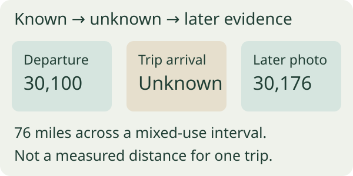

Keep the gap instead of filling it with a convenient number
Record which field is missing: departure reading, arrival reading, unit or vehicle. Retain the known trip date, purpose, places and source references. A blank reading, an invalid value and a confirmed zero-length movement are different states.
IRS Publication 463 (2025) discusses incomplete records using a specific statement plus sufficient supporting evidence. That is US substantiation guidance with conditions, not a promise that a map estimate or this worksheet will be accepted. Consult the current applicable rules and reviewer for your situation.
Evidence about a visit can support time or purpose without establishing distance. Keep those roles separate: an appointment entry does not measure a journey, and a photograph is useful only if its vehicle, reading and timing are identified.
Worked gap: 76 miles of vehicle movement are not one trip
Fictional log: the departure reading is 30,100 miles. The trip’s arrival reading is missing. A later photo shows 30,176 miles after other business and personal driving. The difference is 76 miles for the whole interval, not a measured distance for the missing trip.

| Item | Known | Does not establish | Record next |
|---|---|---|---|
| Departure photo | 30,100 miles for identified vehicle | Arrival reading | Source time and reference |
| Appointment record | Visit date/place if reliable | Miles traveled | Keep purpose/time evidence |
| Later photo | 30,176 after mixed use | Specific trip distance | Identify intervening movements |
| Possible route estimate | 12.4 miles if method verified | Measured odometer distance | Label estimate; reviewer decision pending |
The 12.4-mile value is only a fictional candidate estimate. Do not enter 30,112.4 as an observed arrival reading to make the subtraction work. Preserve source, route assumptions, date prepared and whether the person reviewing the record accepts the method.
If a reliable contemporaneous arrival photo later appears, add its reference and a dated correction. Keep the original blank and the correction history in your supporting records. Do not call the later discovery a reading you entered at the time of travel.
Keep estimates and approval separate from measured fields
For a proposed reconstruction, state the method and limitations. A usual route may differ from the route actually driven; stops, detours and mixed personal travel matter. Do not allocate the entire interval to business simply because the known appointment was business-related.
Ask your employer, accountant or other appropriate reviewer what documentation is needed for the intended use. A reviewer accepting an entry for one reimbursement process does not establish tax deductibility everywhere. Keep reimbursement status separate from evidence status.
Before totaling a report, identify unresolved rows. Avoid exporting a clean-looking total that silently combines measured values, estimates and missing trips under one label. Preserve units consistently and retain the supporting correction sheet with the report.
OdoCue offers manual entry, not recovery of a missing reading
OdoCue’s current listing supports start/end odometer readings or direct distance, purposes, notes, vehicles and local records without required GPS tracking. Premium lists CSV/PDF exports, yearly reports, reimbursement summaries, custom rates and unlimited report history.
We publish OdoCue. Direct-distance entry is an input mode, not proof that a distance was measured. Use notes and separate supporting records to preserve source and uncertainty; a built-in immutable correction audit is not established by the current listing.
This CSV is an independent evidence-gap worksheet, not a promised import or tax form. The manual-mileage parent gives the complete ordinary trip record; this guide handles the exceptional missing-field case without inventing evidence.
If the method fits your task, explore OdoCue’s listed features on an iPhone. Check current features and plans before downloading.
See OdoCue for iOSDownload the free worksheet
Use the CSV in Numbers, Excel or a spreadsheet editor. One fictional gap and a blank row; estimates remain distinct from measured readings and tax acceptance. Replace them with your own observations. The CSV is separate from the app and no email is required.
Questions answered
Can the next reading fill the previous trip’s arrival?
Not if intervening movements are unresolved. It bounds a larger interval, not that trip alone.
Can I use a route estimate?
Label its method and limitations separately and ask the appropriate reviewer; acceptance is not guaranteed.
Does direct-distance mode make an estimate measured?
No. Input mode does not establish evidence quality.
Continue with OdoCue on iOS
Use the App Store listing to check compatibility, privacy information and current plan terms. A free download may offer paid features.
Download OdoCue for iOSSources and product details
- IRS Publication 463: Incomplete records2025 publication, US recordkeeping context read October 19, 2026; no guaranteed acceptance or deduction.
- OdoCue on the App StoreCurrent US App Store product description; checked October 19, 2026.
Editorial method: primary guidance, a current Apple listing, an original worked example and an independent critique. No search ranking, install or outcome result is claimed.